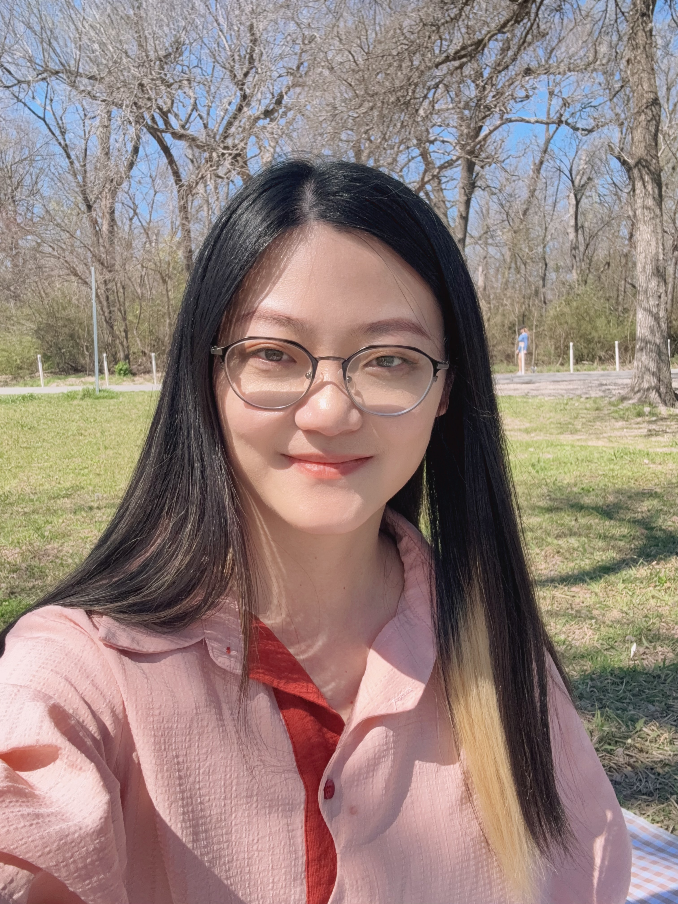

Welcome to a Safe Space for Healing
I provide compassionate, evidence-based therapy to help you navigate life's challenges and find inner peace. Together, we'll work towards healing and personal growth in a supportive, non-judgmental environment.
About Me
I am licensed in TX, WA, and CA state for online counseling only. I am a psychotherapist specializing in trauma healing, women’s inner power, LGBTQ+ identity, and cross-cultural experiences. My approach is deep, intuitive, and humanistic. I believe real strength comes not from hardening yourself, but from reconnecting with your inner truth and restoring mind–body harmony.
I focus on developmental and relational trauma, especially for East Asian women who grew up suppressing their real needs. I offer a steady, non-judgmental space to rediscover your sensitivity, strength, and longing.
I also support many Chinese professionals in major tech companies facing workplace bullying, office politics, managerial pressure, and visa-related anxiety—helping them regain stability, clarity, and dignity amid uncertainty.
EMDR – A approach to reprocess traumatic memories without reliving in past memories; IFS (Internal Family Systems) – A non-pathologizing framework that helps you understand and harmonize different emotional parts within yourself; Somatic Therapy – A practice that uses body awareness to regulate emotions, release stored tension.
In my therapy room, one of the things I value most is witnessing someone reclaim their inner authority. Many of us were taught, from a very young age, to suppress, to endure, to accommodate. Over time, we lose trust in our own intuition, our emotions, and our judgment. “Inner strength” is not about becoming tougher—it’s about finally being able to hear your own voice, recognizing what feels true for you, and choosing to stand on your own side. When a person can sense that quiet, steady “I am here” within themselves—even in the middle of confusion, conflict, or pressure—that is the moment their authority begins to return to the body. And that kind of strength doesn’t need to convince others; it only needs to be acknowledged by yourself.
Credentials & Training
- Licensed in TX, WA, CA
- Master's in mental health counseling
- Trained in Internal Family System (IFS)
- Trained in EMDR
- Somatic Therapy
- trauma-informed,humanistic-informed, femenism-informed
Services
Evidence-based therapeutic approaches tailored to your unique needs
Internal Family Systems (IFS)
IFS therapy helps you understand and heal the different parts of yourself. This approach recognizes that we all have various internal parts that influence our thoughts, feelings, and behaviors.
- Identify and understand internal conflicts
- Develop self-compassion and inner harmony
- Heal from past trauma and wounds
EMDR Therapy
Eye Movement Desensitization and Reprocessing (EMDR) is an evidence-based therapy that helps process and heal from traumatic memories and experiences.
- Process traumatic memories safely
- Reduce symptoms of PTSD and anxiety
- Develop healthier coping mechanisms
Somatic Therapy
Somatic therapy focuses on the mind-body connection, helping you become aware of how emotions and trauma are stored in your body and how to release them.
- Release stored trauma and tension
- Improve mind-body awareness
- Develop grounding and regulation skills
Frequently Asked Questions
How to do inicial contact?
You can reach out to me by email. I reply new client within 24 hours. Please include your state of residence and your insurance information (insurance cannot be used for California clients). After that, we can schedule a 15-minute consultation call where you can briefly share what you’re looking for, and I will also introduce myself further so we can see if we’re a good fit.
What can I expect in the first session?
The first session is an opportunity for us to get to know each other. I'll ask about your background, current challenges, and goals for therapy. We'll discuss your needs and create a personalized treatment plan.
How long does therapy typically take?
The duration varies depending on your goals and needs. Some clients see significant improvement in 8-12 sessions, while others benefit from longer-term therapy. We'll regularly assess progress and adjust accordingly.
Do you accept insurance?
I am an out-of-network provider. I can provide you with a superbill that you can submit to your insurance company for potential reimbursement. Please check with your insurance provider about out-of-network benefits.
What are your fees?
Individual therapy sessions are $200 for 50 minutes. I offer a limited number of sliding scale spots for those with financial need. Please contact me to discuss payment options and availability.
Is therapy confidential?
Yes, therapy is confidential. There are a few exceptions, such as if you are at risk of harming yourself or others, or if there is suspected abuse of a minor. I'll discuss confidentiality in detail during our first session.
Do you offer online therapy?
Yes, I offer both in-person and online therapy sessions. Online sessions are conducted through a secure, HIPAA-compliant platform. Many clients find online therapy just as effective as in-person sessions.
Contact Me
Ready to begin your healing journey? I'm here to help.
Get in Touch
Email me and I reply new clients in 24 hours. Please inform me your living State, whether you want to use insurance, and what brings you to counseling. I offer a free 15-minute consultation to discuss your needs and answer any questions you may have about therapy.